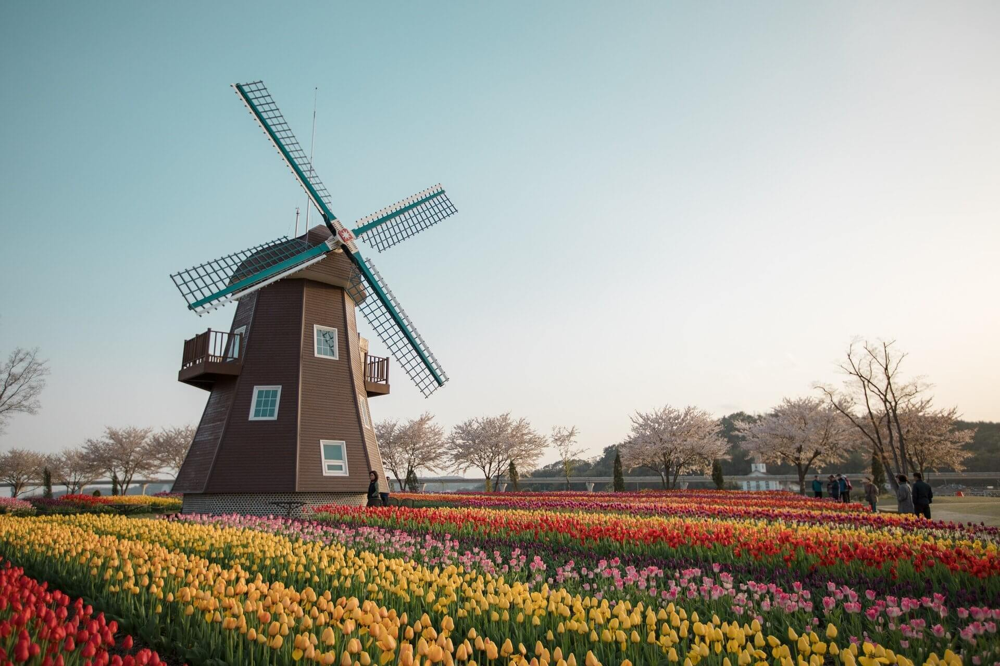

アムステルダム
アムステルダムについて
アムステルダムは美しい運河が多い街で特徴的な建物が並んだ風景が印象的です。
寒い季節になると凍った運河の上を滑って遊ぶこともあるようです。
冬期オリンピックのスピードスケートでオランダ選手が常に上位にいるのもこれのおかげかもしれないですね！
世界が誇るチーズ
オランダのチーズは世界的に知られた産地です。
オランダ全土で作られていてオランダの食生活になくてはならない存在です。
酪農が盛んな国なので、チーズ以外に牛乳やヨーグルト、バターなどの乳製品も食生活に欠かせません。
チューリップと風車の国

チューリップ
3月後半～5月前半の期間、広大な公園に広がる数え切れないほどのチューリップ畑を見ることが出来ます。
オランダにある世界最大の花の公園「キューケンホフ公園」はチューリップだけでなく様々な花が咲いていて観光に訪れたら一度は行きたい場所です。
風車
オランダを代表するものの一つである風車はさまざまな役割があります。
- 水を掻き出すためのポンプの役割
- 粉を引いたり、丸太を切ったり、工業用の動力の役割
オランダには今も全土に1000基ほどの風車が残っていて、キンデルダイクにある19基の風車はユネスコの世界遺産にも登録されています。